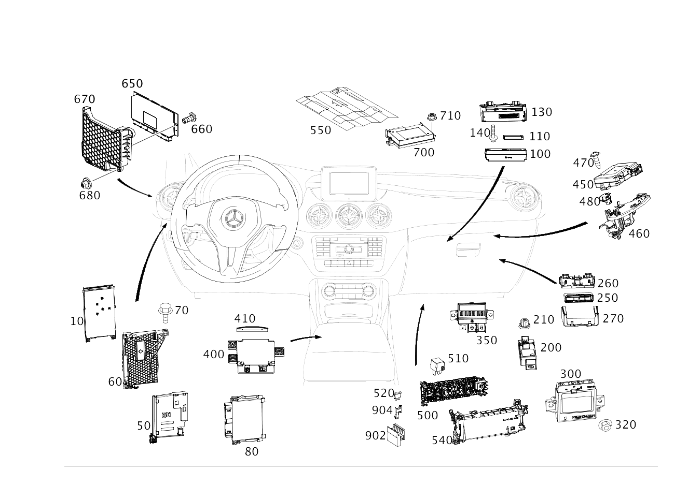

| № | Артикул | Название | Кол. | Примечание | Ограничение |
|---|---|---|---|---|---|
| 10 | A 246 900 90 12 | Блок управления (CONTROL UNIT) | 1 | МОДУЛЬ ОБРАБОТКИ СИГНАЛОВ И УПРАВЛЕНИЯ, ПЕРЕДНИЙ N10 [672] ДЕТАЛЬ ПОСЛЕ УСТАН.ПРОВЕРИТЬ НА АКТУАЛЬНОСТЬ "ПРОШИВНОГО" ПО | |
| 10 | A 246 900 93 13 | Блок управления (CONTROL UNIT) | 1 | МОДУЛЬ ОБРАБОТКИ СИГНАЛОВ И УПРАВЛЕНИЯ, ПЕРЕДНИЙ N10 [672] ДЕТАЛЬ ПОСЛЕ УСТАН.ПРОВЕРИТЬ НА АКТУАЛЬНОСТЬ "ПРОШИВНОГО" ПО [697] ДЕТАЛЬ ПОСТАВЛЯЕТСЯ ТОЛЬКО/ИЛИ ТАКЖЕ КАК ЗАП.ЧАСТЬ | |
| 10 | A 156 900 32 02 | Блок управления (CONTROL UNIT) | 1 | МОДУЛЬ ОБРАБОТКИ СИГНАЛОВ И УПРАВЛЕНИЯ, ПЕРЕДНИЙ N10 [672] ДЕТАЛЬ ПОСЛЕ УСТАН.ПРОВЕРИТЬ НА АКТУАЛЬНОСТЬ "ПРОШИВНОГО" ПО | |
| 10 | A 156 900 73 02 | Блок управления (CONTROL UNIT) | 1 | МОДУЛЬ ОБРАБОТКИ СИГНАЛОВ И УПРАВЛЕНИЯ, ПЕРЕДНИЙ N10 [672] ДЕТАЛЬ ПОСЛЕ УСТАН.ПРОВЕРИТЬ НА АКТУАЛЬНОСТЬ "ПРОШИВНОГО" ПО | |
| 10 | A 156 900 76 02 | Блок управления (CONTROL UNIT) | 1 | МОДУЛЬ ОБРАБОТКИ СИГНАЛОВ И УПРАВЛЕНИЯ, ПЕРЕДНИЙ N10 [672] ДЕТАЛЬ ПОСЛЕ УСТАН.ПРОВЕРИТЬ НА АКТУАЛЬНОСТЬ "ПРОШИВНОГО" ПО | |
| 10 | A 156 900 31 03 | Блок управления (CONTROL UNIT) | 1 | МОДУЛЬ ОБРАБОТКИ СИГНАЛОВ И УПРАВЛЕНИЯ, ПЕРЕДНИЙ [672] ДЕТАЛЬ ПОСЛЕ УСТАН.ПРОВЕРИТЬ НА АКТУАЛЬНОСТЬ "ПРОШИВНОГО" ПО | |
| 10 | A 156 900 52 03 | Блок управления (CONTROL UNIT) | 1 | МОДУЛЬ ОБРАБОТКИ СИГНАЛОВ И УПРАВЛЕНИЯ, ПЕРЕДНИЙ [672] ДЕТАЛЬ ПОСЛЕ УСТАН.ПРОВЕРИТЬ НА АКТУАЛЬНОСТЬ "ПРОШИВНОГО" ПО [697] ДЕТАЛЬ ПОСТАВЛЯЕТСЯ ТОЛЬКО/ИЛИ ТАКЖЕ КАК ЗАП.ЧАСТЬ | |
| 10 | A 246 900 91 12 | Блок управления (CONTROL UNIT) | 1 | МОДУЛЬ ОБРАБОТКИ СИГНАЛОВ И УПРАВЛЕНИЯ, ПЕРЕДНИЙ N10 [672] ДЕТАЛЬ ПОСЛЕ УСТАН.ПРОВЕРИТЬ НА АКТУАЛЬНОСТЬ "ПРОШИВНОГО" ПО | 460/614/615/618/621/622/885/U62/U25 |
| 10 | A 246 900 94 13 | Блок управления (CONTROL UNIT) | 1 | МОДУЛЬ ОБРАБОТКИ СИГНАЛОВ И УПРАВЛЕНИЯ, ПЕРЕДНИЙ N10 [672] ДЕТАЛЬ ПОСЛЕ УСТАН.ПРОВЕРИТЬ НА АКТУАЛЬНОСТЬ "ПРОШИВНОГО" ПО [697] ДЕТАЛЬ ПОСТАВЛЯЕТСЯ ТОЛЬКО/ИЛИ ТАКЖЕ КАК ЗАП.ЧАСТЬ | 460/614/615/618/621/622/885/U62/U25/600 |
| 10 | A 156 900 33 02 | Блок управления (CONTROL UNIT) | 1 | МОДУЛЬ ОБРАБОТКИ СИГНАЛОВ И УПРАВЛЕНИЯ, ПЕРЕДНИЙ N10 [672] ДЕТАЛЬ ПОСЛЕ УСТАН.ПРОВЕРИТЬ НА АКТУАЛЬНОСТЬ "ПРОШИВНОГО" ПО | 460/494/600/614/615/618/621/622/631/632/38O/885/U62/U25 |
| 10 | A 156 900 74 02 | Блок управления (CONTROL UNIT) | 1 | МОДУЛЬ ОБРАБОТКИ СИГНАЛОВ И УПРАВЛЕНИЯ, ПЕРЕДНИЙ N10 [672] ДЕТАЛЬ ПОСЛЕ УСТАН.ПРОВЕРИТЬ НА АКТУАЛЬНОСТЬ "ПРОШИВНОГО" ПО | 460/494/600/614/615/618/621/622/631/632/38O/885/U62/U25 |
| 10 | A 156 900 77 02 | Блок управления (CONTROL UNIT) | 1 | МОДУЛЬ ОБРАБОТКИ СИГНАЛОВ И УПРАВЛЕНИЯ, ПЕРЕДНИЙ N10 [672] ДЕТАЛЬ ПОСЛЕ УСТАН.ПРОВЕРИТЬ НА АКТУАЛЬНОСТЬ "ПРОШИВНОГО" ПО | 460/494/600/614/615/618/621/622/631/632/38O/885/U62/U25 |
| 10 | A 156 900 32 03 | Блок управления (CONTROL UNIT) | 1 | МОДУЛЬ ОБРАБОТКИ СИГНАЛОВ И УПРАВЛЕНИЯ, ПЕРЕДНИЙ N10 [672] ДЕТАЛЬ ПОСЛЕ УСТАН.ПРОВЕРИТЬ НА АКТУАЛЬНОСТЬ "ПРОШИВНОГО" ПО | 460/494/600/614/615/618/621/622/631/632/38O/885/U62/U25 |
| 10 | A 156 900 53 03 | Блок управления (CONTROL UNIT) | 1 | МОДУЛЬ ОБРАБОТКИ СИГНАЛОВ И УПРАВЛЕНИЯ, ПЕРЕДНИЙ N10 [672] ДЕТАЛЬ ПОСЛЕ УСТАН.ПРОВЕРИТЬ НА АКТУАЛЬНОСТЬ "ПРОШИВНОГО" ПО | 460/494/600/614/615/618/621/622/631/632/38O/885/U62/U25 |
| 50 | A 246 545 27 40 | Держатель (HOLDER) | 1 | Блок управления Рулевое управление: Влево | |
| 50 | A 246 545 29 40 | Держатель (HOLDER) | 1 | Блок управления Рулевое управление: Вправо | |
| 50 | A 246 545 05 00 | Держатель (HOLDER) | 1 | Блок управления Рулевое управление: Вправо | |
| 60 | A 246 545 25 40 | Держатель (HOLDER) | 1 | БЛОК УПРАВЛЕНИЯ Рулевое управление: Влево | |
| 60 | A 246 545 28 40 | Держатель (HOLDER) | 1 | БЛОК УПРАВЛЕНИЯ Рулевое управление: Вправо | |
| 70 | N 910143 006002 | Винт с 6-гр. глвк (HEXALOBULAR SCREW) | 3 | ДЕРЖАТЕЛЬ НА ТРАВЕРСЕ; M6X20 | |
| 80 | A 000 900 36 06 | Блок управления (CONTROL UNIT) | 1 | ЦЕНТРАЛЬНЫЙ БЛОК УПРАВЛЕНИЯ ТРАНСМИССИИ N127 [672] ДЕТАЛЬ ПОСЛЕ УСТАН.ПРОВЕРИТЬ НА АКТУАЛЬНОСТЬ "ПРОШИВНОГО" ПО [697] ДЕТАЛЬ ПОСТАВЛЯЕТСЯ ТОЛЬКО/ИЛИ ТАКЖЕ КАК ЗАП.ЧАСТЬ | M651+927 |
| 100 | A 166 900 87 12 | Блок управления (CONTROL UNIT) | 1 | Навигационная система A2/30 [697] ДЕТАЛЬ ПОСТАВЛЯЕТСЯ ТОЛЬКО/ИЛИ ТАКЖЕ КАК ЗАП.ЧАСТЬ | 509 |
| 100 | A 166 900 62 15 | Блок управления (CONTROL UNIT) | 1 | Навигационная система A2/30 [672] ДЕТАЛЬ ПОСЛЕ УСТАН.ПРОВЕРИТЬ НА АКТУАЛЬНОСТЬ "ПРОШИВНОГО" ПО [697] ДЕТАЛЬ ПОСТАВЛЯЕТСЯ ТОЛЬКО/ИЛИ ТАКЖЕ КАК ЗАП.ЧАСТЬ | 509 |
| 100 | A 166 900 00 01 | Блок управления | 1 | Навигационная система A2/30 [697] ДЕТАЛЬ ПОСТАВЛЯЕТСЯ ТОЛЬКО/ИЛИ ТАКЖЕ КАК ЗАП.ЧАСТЬ | 508 |
| 100 | A 166 900 27 03 | Блок управления | 1 | Навигационная система A2/30 [697] ДЕТАЛЬ ПОСТАВЛЯЕТСЯ ТОЛЬКО/ИЛИ ТАКЖЕ КАК ЗАП.ЧАСТЬ | 508 |
| 100 | A 166 900 95 08 | Блок управления | 1 | Навигационная система A2/30 [697] ДЕТАЛЬ ПОСТАВЛЯЕТСЯ ТОЛЬКО/ИЛИ ТАКЖЕ КАК ЗАП.ЧАСТЬ | 508 |
| 100 | A 166 900 87 08 | Блок управления (CONTROL UNIT) | 1 | Навигационная система A2/30 [672] ДЕТАЛЬ ПОСЛЕ УСТАН.ПРОВЕРИТЬ НА АКТУАЛЬНОСТЬ "ПРОШИВНОГО" ПО [697] ДЕТАЛЬ ПОСТАВЛЯЕТСЯ ТОЛЬКО/ИЛИ ТАКЖЕ КАК ЗАП.ЧАСТЬ | 508 |
| 100 | A 166 900 87 12 | Блок управления (CONTROL UNIT) | 1 | Навигационная система A2/30 [697] ДЕТАЛЬ ПОСТАВЛЯЕТСЯ ТОЛЬКО/ИЛИ ТАКЖЕ КАК ЗАП.ЧАСТЬ | 508 |
| 100 | A 166 900 62 15 | Блок управления (CONTROL UNIT) | 1 | Навигационная система A2/30 [672] ДЕТАЛЬ ПОСЛЕ УСТАН.ПРОВЕРИТЬ НА АКТУАЛЬНОСТЬ "ПРОШИВНОГО" ПО [697] ДЕТАЛЬ ПОСТАВЛЯЕТСЯ ТОЛЬКО/ИЛИ ТАКЖЕ КАК ЗАП.ЧАСТЬ | 508 |
| 100 | A 166 900 31 03 | Блок управления (CONTROL UNIT) | 1 | Навигационная система A2/30 [672] ДЕТАЛЬ ПОСЛЕ УСТАН.ПРОВЕРИТЬ НА АКТУАЛЬНОСТЬ "ПРОШИВНОГО" ПО | 508+524L |
| 100 | A 166 900 66 15 | Блок управления (CONTROL UNIT) | 1 | Навигационная система A2/30 [402] БОЛЬШЕ НЕ ПОСТАВЛЯЕТСЯ | 508+524L |
| 100 | A 166 900 89 08 | Блок управления (CONTROL UNIT) | 1 | Навигационная система A2/30 [672] ДЕТАЛЬ ПОСЛЕ УСТАН.ПРОВЕРИТЬ НА АКТУАЛЬНОСТЬ "ПРОШИВНОГО" ПО | 509+460 |
| 100 | A 166 900 89 12 | Блок управления (CONTROL UNIT) | 1 | Навигационная система A2/30 | 509+460 |
| 100 | A 166 900 90 08 | Блок управления (CONTROL UNIT) | 1 | Навигационная система A2/30 [672] ДЕТАЛЬ ПОСЛЕ УСТАН.ПРОВЕРИТЬ НА АКТУАЛЬНОСТЬ "ПРОШИВНОГО" ПО | 509+830 |
| 100 | A 166 900 91 12 | Блок управления (CONTROL UNIT) | 1 | Навигационная система A2/30 | 509+830 |
| 100 | A 166 900 64 15 | Блок управления (CONTROL UNIT) | 1 | Навигационная система A2/30 [672] ДЕТАЛЬ ПОСЛЕ УСТАН.ПРОВЕРИТЬ НА АКТУАЛЬНОСТЬ "ПРОШИВНОГО" ПО | 509+830 |
| 100 | A 166 900 31 03 | Блок управления (CONTROL UNIT) | 1 | Навигационная система A2/30 [672] ДЕТАЛЬ ПОСЛЕ УСТАН.ПРОВЕРИТЬ НА АКТУАЛЬНОСТЬ "ПРОШИВНОГО" ПО | 509+524L |
| 100 | A 166 900 66 15 | Блок управления (CONTROL UNIT) | 1 | Навигационная система A2/30 [402] БОЛЬШЕ НЕ ПОСТАВЛЯЕТСЯ | 509+524L |
| 100 | A 166 900 93 12 | Блок управления (CONTROL UNIT) | 1 | Навигационная система A2/30 | 509+(625/919L) |
| 100 | A 166 900 65 15 | Блок управления (CONTROL UNIT) | 1 | Навигационная система A2/30 [672] ДЕТАЛЬ ПОСЛЕ УСТАН.ПРОВЕРИТЬ НА АКТУАЛЬНОСТЬ "ПРОШИВНОГО" ПО [697] ДЕТАЛЬ ПОСТАВЛЯЕТСЯ ТОЛЬКО/ИЛИ ТАКЖЕ КАК ЗАП.ЧАСТЬ [402] БОЛЬШЕ НЕ ПОСТАВЛЯЕТСЯ | 509+(625/919L) |
| 100 | A 166 900 81 07 | Блок управления | 1 | Навигационная система A2/30 | 508+(460/494) |
| 100 | A 166 900 96 08 | Блок управления (CONTROL UNIT) | 1 | Навигационная система A2/30 | 508+(460/494) |
| 100 | A 166 900 89 08 | Блок управления (CONTROL UNIT) | 1 | Навигационная система A2/30 [672] ДЕТАЛЬ ПОСЛЕ УСТАН.ПРОВЕРИТЬ НА АКТУАЛЬНОСТЬ "ПРОШИВНОГО" ПО | 508+(460/494) |
| 100 | A 166 900 89 12 | Блок управления (CONTROL UNIT) | 1 | Навигационная система A2/30 | 508+(460/494) |
| 100 | A 166 900 63 15 | Блок управления (CONTROL UNIT) | 1 | Навигационная система A2/30 [672] ДЕТАЛЬ ПОСЛЕ УСТАН.ПРОВЕРИТЬ НА АКТУАЛЬНОСТЬ "ПРОШИВНОГО" ПО [697] ДЕТАЛЬ ПОСТАВЛЯЕТСЯ ТОЛЬКО/ИЛИ ТАКЖЕ КАК ЗАП.ЧАСТЬ | 508+(460/494) |
| 100 | A 166 900 21 07 | Блок управления (CONTROL UNIT) | 1 | Навигационная система A2/30 [672] ДЕТАЛЬ ПОСЛЕ УСТАН.ПРОВЕРИТЬ НА АКТУАЛЬНОСТЬ "ПРОШИВНОГО" ПО | 508+(625/919L) |
| 100 | A 166 900 30 09 | Блок управления (CONTROL UNIT) | 1 | Навигационная система A2/30 [672] ДЕТАЛЬ ПОСЛЕ УСТАН.ПРОВЕРИТЬ НА АКТУАЛЬНОСТЬ "ПРОШИВНОГО" ПО | 508+(625/919L) |
| 100 | A 166 900 93 12 | Блок управления (CONTROL UNIT) | 1 | Навигационная система A2/30 | 508+(625/919L) |
| 100 | A 166 900 65 15 | Блок управления (CONTROL UNIT) | 1 | Навигационная система A2/30 [672] ДЕТАЛЬ ПОСЛЕ УСТАН.ПРОВЕРИТЬ НА АКТУАЛЬНОСТЬ "ПРОШИВНОГО" ПО [697] ДЕТАЛЬ ПОСТАВЛЯЕТСЯ ТОЛЬКО/ИЛИ ТАКЖЕ КАК ЗАП.ЧАСТЬ [402] БОЛЬШЕ НЕ ПОСТАВЛЯЕТСЯ | 508+(625/919L) |
| 100 | A 166 900 82 07 | Блок управления | 1 | Навигационная система A2/30 | 508+830+803 |
| 100 | A 166 900 97 08 | Блок управления | 1 | Навигационная система A2/30 | 508+830 |
| 100 | A 166 900 24 09 | Блок управления (CONTROL UNIT) | 1 | Навигационная система A2/30 | 508+830 |
| 100 | A 166 900 90 08 | Блок управления (CONTROL UNIT) | 1 | Навигационная система A2/30 [672] ДЕТАЛЬ ПОСЛЕ УСТАН.ПРОВЕРИТЬ НА АКТУАЛЬНОСТЬ "ПРОШИВНОГО" ПО | 508+830 |
| 100 | A 166 900 91 12 | Блок управления (CONTROL UNIT) | 1 | Навигационная система A2/30 | 508+830 |
| 100 | A 166 900 64 15 | Блок управления (CONTROL UNIT) | 1 | Навигационная система A2/30 [672] ДЕТАЛЬ ПОСЛЕ УСТАН.ПРОВЕРИТЬ НА АКТУАЛЬНОСТЬ "ПРОШИВНОГО" ПО | 508+830 |
| 100 | A 166 900 67 08 | Блок управления | 1 | Навигационная система A2/30 | 508+581L |
| 110 | A 172 982 00 25 | - Литий-ионная АКБ (BATTERY PACK) | 1 | [697] ДЕТАЛЬ ПОСТАВЛЯЕТСЯ ТОЛЬКО/ИЛИ ТАКЖЕ КАК ЗАП.ЧАСТЬ | 509 |
| 130 | A 172 810 00 11 | Контактная плата (CONTACT PLATE) | 1 | КРЕПЛЕНИЕ БЛОКА УПРАВЛЕНИЯ | 508/509 |
| 140 | A 001 984 62 29 | Болт с головкой торкс (HEXALOBULAR BOLT) | 2 | КРЕПЛЕНИЕ КОНТАКТНОЙ ПЛАСТИНЫ; 5X10 | 508/509 |
| 200 | A 166 900 33 09 | Блок управления (CONTROL UNIT) | 1 | СИСТЕМА РЕГУЛИРОВКИ УГЛА НАКЛОНА ФАР [672] ДЕТАЛЬ ПОСЛЕ УСТАН.ПРОВЕРИТЬ НА АКТУАЛЬНОСТЬ "ПРОШИВНОГО" ПО [697] ДЕТАЛЬ ПОСТАВЛЯЕТСЯ ТОЛЬКО/ИЛИ ТАКЖЕ КАК ЗАП.ЧАСТЬ | 614/615/618/621/622 |
| 210 | A 000 984 00 10 | Пластмассовая гайка (PLASTIC NUT) | 2 | КРЕПЛЕНИЕ БЛОКА УПРАВЛЕНИЯ | 614/615/618/621/622 |
| 250 | A 231 901 13 00 | Блок управл. | 1 | СИСТЕМА УЧЕТА И ВЗИМАНИЯ ДОРОЖНЫХ СБОРОВ | 498 |
| 260 | A 231 827 00 14 | Держатель (HOLDER) | 1 | БЛОК УПРАВЛЕНИЯ СИСТЕМЫ УЧЁТА НАЛОГООБЛАГАЕМОГО ПРОБЕГА | 498 |
| 270 | A 204 827 00 22 | Крышка блока управления (COVER, CONTROL UNIT) | 1 | БЛОК УПРАВЛЕНИЯ СИСТЕМЫ УЧЁТА НАЛОГООБЛАГАЕМОГО ПРОБЕГА | 498 |
| 300 | A 246 900 07 07 | Блок управления (CONTROL UNIT) | 1 | Система PARKTRONIC N62 [672] ДЕТАЛЬ ПОСЛЕ УСТАН.ПРОВЕРИТЬ НА АКТУАЛЬНОСТЬ "ПРОШИВНОГО" ПО [697] ДЕТАЛЬ ПОСТАВЛЯЕТСЯ ТОЛЬКО/ИЛИ ТАКЖЕ КАК ЗАП.ЧАСТЬ | (220/235)+802 |
| 300 | A 246 900 43 12 | Блок управления (CONTROL UNIT) | 1 | Система PARKTRONIC N62 [672] ДЕТАЛЬ ПОСЛЕ УСТАН.ПРОВЕРИТЬ НА АКТУАЛЬНОСТЬ "ПРОШИВНОГО" ПО [697] ДЕТАЛЬ ПОСТАВЛЯЕТСЯ ТОЛЬКО/ИЛИ ТАКЖЕ КАК ЗАП.ЧАСТЬ | (803/804/805+-055)+(220/235) |
| 300 | A 000 900 37 06 | Блок управления (CONTROL UNIT) | 1 | Система PARKTRONIC N62 [672] ДЕТАЛЬ ПОСЛЕ УСТАН.ПРОВЕРИТЬ НА АКТУАЛЬНОСТЬ "ПРОШИВНОГО" ПО | (805+055/806+-140)+235 |
| 300 | A 000 900 17 08 | Блок управления (CONTROL UNIT) | 1 | Система PARKTRONIC N62 [672] ДЕТАЛЬ ПОСЛЕ УСТАН.ПРОВЕРИТЬ НА АКТУАЛЬНОСТЬ "ПРОШИВНОГО" ПО | (805+055/806+-140)+235 |
| 300 | A 000 900 17 08 | Блок управления (CONTROL UNIT) | 1 | Система PARKTRONIC N62 [672] ДЕТАЛЬ ПОСЛЕ УСТАН.ПРОВЕРИТЬ НА АКТУАЛЬНОСТЬ "ПРОШИВНОГО" ПО | 806+140+235 |
| 300 | A 000 900 32 10 | Блок управления (CONTROL UNIT) | 1 | Система PARKTRONIC N62 [672] ДЕТАЛЬ ПОСЛЕ УСТАН.ПРОВЕРИТЬ НА АКТУАЛЬНОСТЬ "ПРОШИВНОГО" ПО | (807/808/809/800)+235 |
| 300 | A 000 900 67 13 | Блок управления (CONTROL UNIT) | 1 | Система PARKTRONIC N62 [672] ДЕТАЛЬ ПОСЛЕ УСТАН.ПРОВЕРИТЬ НА АКТУАЛЬНОСТЬ "ПРОШИВНОГО" ПО [697] ДЕТАЛЬ ПОСТАВЛЯЕТСЯ ТОЛЬКО/ИЛИ ТАКЖЕ КАК ЗАП.ЧАСТЬ | (807/808/809/800)+235 |
| 320 | N 000000 008290 | Шестигранная гайка (HEXAGON NUT) | 3 | КРЕПЛЕНИЕ БЛОКА УПРАВЛЕНИЯ; M6 | |
| 350 | A 000 982 20 23 | Реле (RELAY) | 1 | ВСПОМОГАТЕЛЬНАЯ АКБ | B03 |
| 400 | A 172 900 28 09 | Блок управления (CONTROL UNIT) | 1 | МУЛЬТИМЕДИЙНЫЙ ИНТЕРФЕЙС N125/1 [672] ДЕТАЛЬ ПОСЛЕ УСТАН.ПРОВЕРИТЬ НА АКТУАЛЬНОСТЬ "ПРОШИВНОГО" ПО [697] ДЕТАЛЬ ПОСТАВЛЯЕТСЯ ТОЛЬКО/ИЛИ ТАКЖЕ КАК ЗАП.ЧАСТЬ | (803/804/FT+805+-055/FS+(805/806+-140/FX+805))+518 |
| 400 | A 176 900 55 02 | Блок управления (CONTROL UNIT) | 1 | МУЛЬТИМЕДИЙНЫЙ ИНТЕРФЕЙС [697] ДЕТАЛЬ ПОСТАВЛЯЕТСЯ ТОЛЬКО/ИЛИ ТАКЖЕ КАК ЗАП.ЧАСТЬ [402] БОЛЬШЕ НЕ ПОСТАВЛЯЕТСЯ | B56+(512/527) |
| 400 | A 176 900 56 02 | Блок управления (CONTROL UNIT) | 1 | МУЛЬТИМЕДИЙНЫЙ ИНТЕРФЕЙС [402] БОЛЬШЕ НЕ ПОСТАВЛЯЕТСЯ | B56+(510/523) |
| 400 | A 176 900 57 02 | Блок управления (CONTROL UNIT) | 1 | МУЛЬТИМЕДИЙНЫЙ ИНТЕРФЕЙС [697] ДЕТАЛЬ ПОСТАВЛЯЕТСЯ ТОЛЬКО/ИЛИ ТАКЖЕ КАК ЗАП.ЧАСТЬ | B62+(512/527) |
| 400 | A 176 900 58 02 | Блок управления (CONTROL UNIT) | 1 | МУЛЬТИМЕДИЙНЫЙ ИНТЕРФЕЙС [697] ДЕТАЛЬ ПОСТАВЛЯЕТСЯ ТОЛЬКО/ИЛИ ТАКЖЕ КАК ЗАП.ЧАСТЬ | B62+(510/523) |
| 450 | A 205 900 97 18 | Блок управления (CONTROL UNIT) | 1 | Телематика [672] ДЕТАЛЬ ПОСЛЕ УСТАН.ПРОВЕРИТЬ НА АКТУАЛЬНОСТЬ "ПРОШИВНОГО" ПО | (803/804/805/806)+(350/06U)+(505/520) |
| 450 | A 205 900 35 19 | Блок управления (CONTROL UNIT) | 1 | Телематика [672] ДЕТАЛЬ ПОСЛЕ УСТАН.ПРОВЕРИТЬ НА АКТУАЛЬНОСТЬ "ПРОШИВНОГО" ПО | (803/804/805/806)+(350/06U)+(505/520) |
| 450 | A 242 900 48 01 | Блок управления (CONTROL UNIT) | 1 | Телематика [672] ДЕТАЛЬ ПОСЛЕ УСТАН.ПРОВЕРИТЬ НА АКТУАЛЬНОСТЬ "ПРОШИВНОГО" ПО | (803/804/805/806)+B54 |
| 450 | A 242 900 70 01 | Блок управления (CONTROL UNIT) | 1 | Телематика [672] ДЕТАЛЬ ПОСЛЕ УСТАН.ПРОВЕРИТЬ НА АКТУАЛЬНОСТЬ "ПРОШИВНОГО" ПО [697] ДЕТАЛЬ ПОСТАВЛЯЕТСЯ ТОЛЬКО/ИЛИ ТАКЖЕ КАК ЗАП.ЧАСТЬ | (803/804/805/806)+B54 |
| 450 | A 205 900 01 17 | Блок управления (CONTROL UNIT) | 1 | Телематика [672] ДЕТАЛЬ ПОСЛЕ УСТАН.ПРОВЕРИТЬ НА АКТУАЛЬНОСТЬ "ПРОШИВНОГО" ПО | (803/804/805/806+-140)+B54+(350/05U/06U) |
| 450 | A 205 900 82 18 | Блок управления (CONTROL UNIT) | 1 | Телематика [672] ДЕТАЛЬ ПОСЛЕ УСТАН.ПРОВЕРИТЬ НА АКТУАЛЬНОСТЬ "ПРОШИВНОГО" ПО | (803/804/805/806+-140)+B54+(350/05U/06U) |
| 450 | A 205 900 03 19 | Блок управления (CONTROL UNIT) | 1 | Телематика [672] ДЕТАЛЬ ПОСЛЕ УСТАН.ПРОВЕРИТЬ НА АКТУАЛЬНОСТЬ "ПРОШИВНОГО" ПО | (803/804/805/806)+B54+(350/06U) |
| 450 | A 166 900 55 17 | Блок управления (CONTROL UNIT) | 1 | Телематика [672] ДЕТАЛЬ ПОСЛЕ УСТАН.ПРОВЕРИТЬ НА АКТУАЛЬНОСТЬ "ПРОШИВНОГО" ПО | (803/804/805/806+-140)+B54+(350/05U/06U) |
| 450 | A 205 900 71 23 | Блок управления (CONTROL UNIT) | 1 | Телематика [672] ДЕТАЛЬ ПОСЛЕ УСТАН.ПРОВЕРИТЬ НА АКТУАЛЬНОСТЬ "ПРОШИВНОГО" ПО [697] ДЕТАЛЬ ПОСТАВЛЯЕТСЯ ТОЛЬКО/ИЛИ ТАКЖЕ КАК ЗАП.ЧАСТЬ | (803/804/805/806+-140)+B54+(350/05U/06U) |
| 450 | A 166 900 55 17 | Блок управления (CONTROL UNIT) | 1 | Телематика [672] ДЕТАЛЬ ПОСЛЕ УСТАН.ПРОВЕРИТЬ НА АКТУАЛЬНОСТЬ "ПРОШИВНОГО" ПО | 806+140+B54+(350/06U) |
| 450 | A 205 900 71 23 | Блок управления (CONTROL UNIT) | 1 | Телематика [672] ДЕТАЛЬ ПОСЛЕ УСТАН.ПРОВЕРИТЬ НА АКТУАЛЬНОСТЬ "ПРОШИВНОГО" ПО [697] ДЕТАЛЬ ПОСТАВЛЯЕТСЯ ТОЛЬКО/ИЛИ ТАКЖЕ КАК ЗАП.ЧАСТЬ | 806+140+B54+(350/06U) |
| 450 | A 205 900 05 24 | Блок управления (CONTROL UNIT) | 1 | Телематика [672] ДЕТАЛЬ ПОСЛЕ УСТАН.ПРОВЕРИТЬ НА АКТУАЛЬНОСТЬ "ПРОШИВНОГО" ПО [697] ДЕТАЛЬ ПОСТАВЛЯЕТСЯ ТОЛЬКО/ИЛИ ТАКЖЕ КАК ЗАП.ЧАСТЬ | 806+140+B54+(350/06U) |
| 450 | A 205 900 00 17 | Блок управления (CONTROL UNIT) | 1 | Телематика [672] ДЕТАЛЬ ПОСЛЕ УСТАН.ПРОВЕРИТЬ НА АКТУАЛЬНОСТЬ "ПРОШИВНОГО" ПО | (803/804/805/806+-140)+(350/06U) |
| 450 | A 205 900 81 18 | Блок управления (CONTROL UNIT) | 1 | Телематика [672] ДЕТАЛЬ ПОСЛЕ УСТАН.ПРОВЕРИТЬ НА АКТУАЛЬНОСТЬ "ПРОШИВНОГО" ПО | (803/804/805/806+-140)+(350/06U) |
| 450 | A 205 900 02 19 | Блок управления (CONTROL UNIT) | 1 | Телематика [672] ДЕТАЛЬ ПОСЛЕ УСТАН.ПРОВЕРИТЬ НА АКТУАЛЬНОСТЬ "ПРОШИВНОГО" ПО | (803/804/805/806+-140)+(350/06U) |
| 450 | A 166 900 54 17 | Блок управления (CONTROL UNIT) | 1 | Телематика [672] ДЕТАЛЬ ПОСЛЕ УСТАН.ПРОВЕРИТЬ НА АКТУАЛЬНОСТЬ "ПРОШИВНОГО" ПО | (803/804/805/806+-140)+(350/06U) |
| 450 | A 205 900 70 23 | Блок управления (CONTROL UNIT) | 1 | Телематика [672] ДЕТАЛЬ ПОСЛЕ УСТАН.ПРОВЕРИТЬ НА АКТУАЛЬНОСТЬ "ПРОШИВНОГО" ПО [697] ДЕТАЛЬ ПОСТАВЛЯЕТСЯ ТОЛЬКО/ИЛИ ТАКЖЕ КАК ЗАП.ЧАСТЬ | (803/804/805/806+-140)+(350/06U) |
| 450 | A 166 900 54 17 | Блок управления (CONTROL UNIT) | 1 | Телематика [672] ДЕТАЛЬ ПОСЛЕ УСТАН.ПРОВЕРИТЬ НА АКТУАЛЬНОСТЬ "ПРОШИВНОГО" ПО | 806+140+(350/06U) |
| 450 | A 205 900 70 23 | Блок управления (CONTROL UNIT) | 1 | Телематика [672] ДЕТАЛЬ ПОСЛЕ УСТАН.ПРОВЕРИТЬ НА АКТУАЛЬНОСТЬ "ПРОШИВНОГО" ПО [697] ДЕТАЛЬ ПОСТАВЛЯЕТСЯ ТОЛЬКО/ИЛИ ТАКЖЕ КАК ЗАП.ЧАСТЬ | 806+140+(350/06U) |
| 450 | A 205 900 70 23 | Блок управления (CONTROL UNIT) | 1 | Телематика [672] ДЕТАЛЬ ПОСЛЕ УСТАН.ПРОВЕРИТЬ НА АКТУАЛЬНОСТЬ "ПРОШИВНОГО" ПО [697] ДЕТАЛЬ ПОСТАВЛЯЕТСЯ ТОЛЬКО/ИЛИ ТАКЖЕ КАК ЗАП.ЧАСТЬ | 806+140+(350/06U) |
| 450 | A 205 900 04 24 | Блок управления (CONTROL UNIT) | 1 | Телематика [672] ДЕТАЛЬ ПОСЛЕ УСТАН.ПРОВЕРИТЬ НА АКТУАЛЬНОСТЬ "ПРОШИВНОГО" ПО [697] ДЕТАЛЬ ПОСТАВЛЯЕТСЯ ТОЛЬКО/ИЛИ ТАКЖЕ КАК ЗАП.ЧАСТЬ | 806+140+(350/06U) |
| 470 | A 006 990 09 12 | Винт со полукругл.головой (PAN HEAD SCREW W COLLAR) | 2 | КРЕПЛЕНИЕ БЛОКА УПРАВЛЕНИЯ; 4X17 | (802/803/804/805/806)+(B54/350/05U/06U) |
| 480 | A 000 990 81 56 | Пружинная гайка (CLIP-TYPE NUT) | 2 | КРЕПЛЕНИЕ БЛОКА УПРАВЛЕНИЯ | (802/803/804/805/806)+(B54/350/05U/06U) |
| 500 | A 246 906 66 00 | Блок реле (RELAY UNIT) | 1 | БЛОК ПРЕДОХР. И РЕЛЕ СПЕРЕДИ | |
| 500 | A 246 906 72 00 | Блок реле (RELAY UNIT) | 1 | БЛОК ПРЕДОХР. И РЕЛЕ СПЕРЕДИ | |
| 510 | A 000 982 82 23 | Реле (RELAY) | 1 | ГНЕЗДО A | |
| 510 | A 003 542 08 19 | Реле (RELAY) | 1 | ГНЕЗДО A | |
| 510 | A 002 542 72 19 | Контактор (CONTACTOR) | 1 | ГНЕЗДО A | |
| 510 | A 000 982 80 23 | Реле (RELAY) | 1 | ГНЕЗДО A | |
| 510 | A 002 542 93 19 | Реле (RELAY) | 1 | ГНЕЗДО A | |
| 510 | A 002 542 89 19 | Реле (RELAY) | 1 | РАЗЪЕМ B | |
| 510 | A 000 982 83 23 | Реле (RELAY) | 1 | РАЗЪЕМ B | |
| 510 | A 003 542 10 19 | Реле (RELAY) | 1 | РАЗЪЕМ B | |
| 510 | A 002 542 74 19 | Реле (RELAY) | 1 | РАЗЪЕМ B | |
| 510 | A 000 982 78 23 | Реле (RELAY) | 1 | РАЗЪЕМ B | |
| 510 | A 002 542 96 19 | Реле (RELAY) | 1 | РАЗЪЕМ B | |
| 510 | A 002 542 88 19 | Реле (RELAY) | 1 | ГНЕЗДО C | |
| 510 | A 000 982 96 04 | Реле (RELAY) | 1 | ГНЕЗДО C | |
| 510 | A 003 542 16 19 | Реле (RELAY) | 1 | ГНЕЗДО C | |
| 510 | A 002 542 87 19 | Реле (RELAY) | 1 | ГНЕЗДО C | |
| 510 | A 000 982 95 04 | Реле (RELAY) | 1 | ГНЕЗДО C | |
| 510 | A 002 542 94 19 | Реле (RELAY) | 1 | ГНЕЗДО C | |
| 510 | A 000 982 82 23 | Реле (RELAY) | 1 | ГНЕЗДО D | |
| 510 | A 003 542 08 19 | Реле (RELAY) | 1 | ГНЕЗДО D | |
| 510 | A 002 542 72 19 | Контактор (CONTACTOR) | 1 | ГНЕЗДО D | |
| 510 | A 000 982 80 23 | Реле (RELAY) | 1 | ГНЕЗДО D | |
| 510 | A 002 542 93 19 | Реле (RELAY) | 1 | ГНЕЗДО D | |
| 510 | A 000 982 82 23 | Реле (RELAY) | 1 | ГНЕЗДО E | |
| 510 | A 003 542 08 19 | Реле (RELAY) | 1 | ГНЕЗДО E | |
| 510 | A 002 542 72 19 | Контактор (CONTACTOR) | 1 | ГНЕЗДО E | |
| 510 | A 000 982 80 23 | Реле (RELAY) | 1 | ГНЕЗДО E | |
| 510 | A 002 542 93 19 | Реле (RELAY) | 1 | ГНЕЗДО E | |
| 510 | A 000 982 82 23 | Реле (RELAY) | 1 | ГНЕЗДО G | |
| 510 | A 003 542 28 19 | Разъединительное реле АКБ (BATTERY CUTOFF RELAY) | 1 | ГНЕЗДО F | |
| 510 | A 002 542 72 19 | Контактор (CONTACTOR) | 1 | ГНЕЗДО G | |
| 510 | A 000 982 80 23 | Реле (RELAY) | 1 | ГНЕЗДО G | |
| 520 | N 000000 007693 | Плавкая вставка (FUSE LINK) | 1 | Мини; C\-1A\-S Рулевое управление: Вправо | 498 |
| 520 | N 000000 007648 | Плавкая вставка (FUSE LINK) | 8 | Мини; C\-5A\-S | |
| 520 | N 000000 007664 | Плавкая вставка (FUSE LINK) | 19 | Мини; F\-5A\-S | |
| 520 | N 000000 007649 | Плавкая вставка (FUSE LINK) | 7 | Мини; C\-7,5A\-S | |
| 520 | N 000000 007665 | Плавкая вставка (FUSE LINK) | 3 | Мини; F\-7.5A\-S | |
| 520 | N 000000 007650 | Плавкая вставка (FUSE LINK) | 4 | Мини; C\-10A\-S | |
| 520 | N 000000 007666 | Плавкая вставка (FUSE LINK) | 3 | Мини; F\-10\-S | |
| 520 | N 000000 007651 | Плавкая вставка (FUSE LINK) | 5 | Мини; C\-15A\-S | |
| 520 | N 000000 007652 | Плавкая вставка (FUSE LINK) | 3 | Мини; C\-20A\-S | |
| 520 | N 000000 007653 | Плавкая вставка (FUSE LINK) | 6 | Мини; C\-25A\-S | |
| 520 | N 000000 007654 | Плавкая вставка (FUSE LINK) | 12 | Мини; C\-30A\-S | |
| 520 | N 000000 007659 | Плавкая вставка (FUSE LINK) | 8 | Мини; E\-40A\-S | |
| 520 | N 000000 007660 | Плавкая вставка (FUSE LINK) | 1 | Мини; E\-50A\-S | |
| 540 | A 246 540 00 40 | Держатель (HOLDER) | 1 | БЛОК ПРЕДОХР. И РЕЛЕ СПЕРЕДИ Рулевое управление: Влево | |
| 540 | A 246 540 26 14 | Держатель (HOLDER) | 1 | БЛОК ПРЕДОХР. И РЕЛЕ СПЕРЕДИ Рулевое управление: Влево | |
| 540 | A 246 540 01 40 | Держатель (HOLDER) | 1 | БЛОК ПРЕДОХР. И РЕЛЕ СПЕРЕДИ Рулевое управление: Вправо | |
| 550 | A 246 584 09 71 | Закладка | 1 | БЛОК ПРЕДОХРАНИТЕЛЕЙ [402] БОЛЬШЕ НЕ ПОСТАВЛЯЕТСЯ | 802/803/804/805+-055 |
| 550 | A 246 584 16 00 | Закладка (INSERT) | 1 | БЛОК ПРЕДОХРАНИТЕЛЕЙ | 805+055/806/807/808/809 |
| 650 | A 231 900 58 07 | Блок управления (CONTROL UNIT) | 1 | ХОДОВАЯ ЧАСТЬ [672] ДЕТАЛЬ ПОСЛЕ УСТАН.ПРОВЕРИТЬ НА АКТУАЛЬНОСТЬ "ПРОШИВНОГО" ПО | 806+140+459 |
| 650 | A 231 900 70 07 | Блок управления (CONTROL UNIT) | 1 | ХОДОВАЯ ЧАСТЬ [672] ДЕТАЛЬ ПОСЛЕ УСТАН.ПРОВЕРИТЬ НА АКТУАЛЬНОСТЬ "ПРОШИВНОГО" ПО | 806+140+459 |
| 650 | A 231 900 98 07 | Блок управления (CONTROL UNIT) | 1 | ХОДОВАЯ ЧАСТЬ [672] ДЕТАЛЬ ПОСЛЕ УСТАН.ПРОВЕРИТЬ НА АКТУАЛЬНОСТЬ "ПРОШИВНОГО" ПО | (806+140/807)+459 |
| 650 | A 231 900 25 08 | Блок управления (CONTROL UNIT) | 1 | ХОДОВАЯ ЧАСТЬ [672] ДЕТАЛЬ ПОСЛЕ УСТАН.ПРОВЕРИТЬ НА АКТУАЛЬНОСТЬ "ПРОШИВНОГО" ПО [697] ДЕТАЛЬ ПОСТАВЛЯЕТСЯ ТОЛЬКО/ИЛИ ТАКЖЕ КАК ЗАП.ЧАСТЬ | (808/809/800)+459 |
| 660 | A 001 984 63 29 | Болт с головкой торкс (HEXALOBULAR BOLT) | 2 | КРЕПЛЕНИЕ КРОНШТЕЙНА; 5X12 | (806+140/807/808/809/800/801)+459 |
| 670 | A 246 545 01 00 | Держатель (HOLDER) | 1 | КРЕПЛЕНИЕ БЛОКА УПРАВЛЕНИЯ | (806+140/807/808/809/800/801)+459 |
| 680 | A 000 984 00 10 | Пластмассовая гайка (PLASTIC NUT) | 3 | КРЕПЛЕНИЕ КРОНШТЕЙНА | (806+140/807/808/809/800/801)+459 |
| 700 | A 213 900 31 09 | Блок управления (CONTROL UNIT) | 1 | Коммуникация [672] ДЕТАЛЬ ПОСЛЕ УСТАН.ПРОВЕРИТЬ НА АКТУАЛЬНОСТЬ "ПРОШИВНОГО" ПО | (807/808+-058)+360 |
| 700 | A 213 900 22 10 | Блок управления (CONTROL UNIT) | 1 | Коммуникация [672] ДЕТАЛЬ ПОСЛЕ УСТАН.ПРОВЕРИТЬ НА АКТУАЛЬНОСТЬ "ПРОШИВНОГО" ПО | (807/808+-058)+360 |
| 700 | A 213 900 80 13 | Блок управления (CONTROL UNIT) | 1 | Коммуникация [672] ДЕТАЛЬ ПОСЛЕ УСТАН.ПРОВЕРИТЬ НА АКТУАЛЬНОСТЬ "ПРОШИВНОГО" ПО | (807/808+-058)+360 |
| 700 | A 213 900 36 17 | Блок управления (CONTROL UNIT) | 1 | Коммуникация [672] ДЕТАЛЬ ПОСЛЕ УСТАН.ПРОВЕРИТЬ НА АКТУАЛЬНОСТЬ "ПРОШИВНОГО" ПО | (807/808+-058)+360 |
| 700 | A 213 900 34 09 | Блок управления (CONTROL UNIT) | 1 | Коммуникация [672] ДЕТАЛЬ ПОСЛЕ УСТАН.ПРОВЕРИТЬ НА АКТУАЛЬНОСТЬ "ПРОШИВНОГО" ПО | (807/808+-058)+362+(460/494) |
| 700 | A 213 900 25 10 | Блок управления (CONTROL UNIT) | 1 | Коммуникация [672] ДЕТАЛЬ ПОСЛЕ УСТАН.ПРОВЕРИТЬ НА АКТУАЛЬНОСТЬ "ПРОШИВНОГО" ПО | (807/808+-058)+362+494 |
| 700 | A 213 900 33 09 | Блок управления (CONTROL UNIT) | 1 | Коммуникация [672] ДЕТАЛЬ ПОСЛЕ УСТАН.ПРОВЕРИТЬ НА АКТУАЛЬНОСТЬ "ПРОШИВНОГО" ПО | (807/808+-058)+362+830 |
| 700 | A 213 900 24 10 | Блок управления (CONTROL UNIT) | 1 | Коммуникация [672] ДЕТАЛЬ ПОСЛЕ УСТАН.ПРОВЕРИТЬ НА АКТУАЛЬНОСТЬ "ПРОШИВНОГО" ПО | (807/808+-058)+362+830 |
| 700 | A 213 900 83 13 | Блок управления (CONTROL UNIT) | 1 | Коммуникация [672] ДЕТАЛЬ ПОСЛЕ УСТАН.ПРОВЕРИТЬ НА АКТУАЛЬНОСТЬ "ПРОШИВНОГО" ПО | (807/808+-058)+362+494 |
| 700 | A 213 900 47 15 | Блок управления (CONTROL UNIT) | 1 | Коммуникация [672] ДЕТАЛЬ ПОСЛЕ УСТАН.ПРОВЕРИТЬ НА АКТУАЛЬНОСТЬ "ПРОШИВНОГО" ПО | (807/808+-058)+362+494 |
| 700 | A 213 900 82 13 | Блок управления (CONTROL UNIT) | 1 | Коммуникация [672] ДЕТАЛЬ ПОСЛЕ УСТАН.ПРОВЕРИТЬ НА АКТУАЛЬНОСТЬ "ПРОШИВНОГО" ПО | (807/808+-058)+362+830 |
| 700 | A 213 900 46 15 | Блок управления (CONTROL UNIT) | 1 | Коммуникация [672] ДЕТАЛЬ ПОСЛЕ УСТАН.ПРОВЕРИТЬ НА АКТУАЛЬНОСТЬ "ПРОШИВНОГО" ПО | (807/808+-058)+362+830 |
| 700 | A 213 900 38 17 | Блок управления (CONTROL UNIT) | 1 | Коммуникация [672] ДЕТАЛЬ ПОСЛЕ УСТАН.ПРОВЕРИТЬ НА АКТУАЛЬНОСТЬ "ПРОШИВНОГО" ПО | (807/808+-058)+362+830 |
| 700 | A 222 900 53 15 | Блок управления (CONTROL UNIT) | 1 | Коммуникация [672] ДЕТАЛЬ ПОСЛЕ УСТАН.ПРОВЕРИТЬ НА АКТУАЛЬНОСТЬ "ПРОШИВНОГО" ПО [697] ДЕТАЛЬ ПОСТАВЛЯЕТСЯ ТОЛЬКО/ИЛИ ТАКЖЕ КАК ЗАП.ЧАСТЬ | 808+058+360 |
| 700 | A 222 900 22 18 | Блок управления (CONTROL UNIT) | 1 | Коммуникация [672] ДЕТАЛЬ ПОСЛЕ УСТАН.ПРОВЕРИТЬ НА АКТУАЛЬНОСТЬ "ПРОШИВНОГО" ПО [697] ДЕТАЛЬ ПОСТАВЛЯЕТСЯ ТОЛЬКО/ИЛИ ТАКЖЕ КАК ЗАП.ЧАСТЬ | 362+809 |
| 700 | A 222 900 45 19 | Блок управления (CONTROL UNIT) | 1 | Коммуникация [672] ДЕТАЛЬ ПОСЛЕ УСТАН.ПРОВЕРИТЬ НА АКТУАЛЬНОСТЬ "ПРОШИВНОГО" ПО [697] ДЕТАЛЬ ПОСТАВЛЯЕТСЯ ТОЛЬКО/ИЛИ ТАКЖЕ КАК ЗАП.ЧАСТЬ | 362+809 |
| 700 | A 222 900 45 19 | Блок управления (CONTROL UNIT) | 1 | Коммуникация [672] ДЕТАЛЬ ПОСЛЕ УСТАН.ПРОВЕРИТЬ НА АКТУАЛЬНОСТЬ "ПРОШИВНОГО" ПО [697] ДЕТАЛЬ ПОСТАВЛЯЕТСЯ ТОЛЬКО/ИЛИ ТАКЖЕ КАК ЗАП.ЧАСТЬ | 809+-059+362 |
| 700 | A 222 900 42 20 | Блок управления (CONTROL UNIT) | 1 | Коммуникация [672] ДЕТАЛЬ ПОСЛЕ УСТАН.ПРОВЕРИТЬ НА АКТУАЛЬНОСТЬ "ПРОШИВНОГО" ПО [697] ДЕТАЛЬ ПОСТАВЛЯЕТСЯ ТОЛЬКО/ИЛИ ТАКЖЕ КАК ЗАП.ЧАСТЬ | 809+-059+362 |
| 700 | A 222 900 52 15 | Блок управления (CONTROL UNIT) | 1 | Коммуникация [672] ДЕТАЛЬ ПОСЛЕ УСТАН.ПРОВЕРИТЬ НА АКТУАЛЬНОСТЬ "ПРОШИВНОГО" ПО [697] ДЕТАЛЬ ПОСТАВЛЯЕТСЯ ТОЛЬКО/ИЛИ ТАКЖЕ КАК ЗАП.ЧАСТЬ | (808+058/809/800/801)+362+830+-360 |
| 700 | A 222 900 44 20 | Блок управления (CONTROL UNIT) | 1 | Коммуникация [672] ДЕТАЛЬ ПОСЛЕ УСТАН.ПРОВЕРИТЬ НА АКТУАЛЬНОСТЬ "ПРОШИВНОГО" ПО | 809+-059+362+830 |
| 700 | A 222 900 64 15 | Блок управления (CONTROL UNIT) | 1 | Коммуникация [672] ДЕТАЛЬ ПОСЛЕ УСТАН.ПРОВЕРИТЬ НА АКТУАЛЬНОСТЬ "ПРОШИВНОГО" ПО | 809+-059+362+(460/494)+-360 |
| 700 | A 222 900 48 19 | Блок управления (CONTROL UNIT) | 1 | Коммуникация [672] ДЕТАЛЬ ПОСЛЕ УСТАН.ПРОВЕРИТЬ НА АКТУАЛЬНОСТЬ "ПРОШИВНОГО" ПО | 362+(460/494) |
| 700 | A 222 900 45 20 | Блок управления (CONTROL UNIT) | 1 | Коммуникация [672] ДЕТАЛЬ ПОСЛЕ УСТАН.ПРОВЕРИТЬ НА АКТУАЛЬНОСТЬ "ПРОШИВНОГО" ПО | 809+-059+362+(460/494) |
| 700 | A 222 900 42 20 | Блок управления (CONTROL UNIT) | 1 | Коммуникация [672] ДЕТАЛЬ ПОСЛЕ УСТАН.ПРОВЕРИТЬ НА АКТУАЛЬНОСТЬ "ПРОШИВНОГО" ПО [697] ДЕТАЛЬ ПОСТАВЛЯЕТСЯ ТОЛЬКО/ИЛИ ТАКЖЕ КАК ЗАП.ЧАСТЬ | 362+809+059 |
| 700 | A 222 900 44 20 | Блок управления (CONTROL UNIT) | 1 | Коммуникация [672] ДЕТАЛЬ ПОСЛЕ УСТАН.ПРОВЕРИТЬ НА АКТУАЛЬНОСТЬ "ПРОШИВНОГО" ПО | 362+830+809+059 |
| 700 | A 222 900 45 20 | Блок управления (CONTROL UNIT) | 1 | Коммуникация [672] ДЕТАЛЬ ПОСЛЕ УСТАН.ПРОВЕРИТЬ НА АКТУАЛЬНОСТЬ "ПРОШИВНОГО" ПО | 362+(460/494)+809+059 |
| 700 | A 257 900 72 00 | Блок управления (CONTROL UNIT) | 1 | Коммуникация [672] ДЕТАЛЬ ПОСЛЕ УСТАН.ПРОВЕРИТЬ НА АКТУАЛЬНОСТЬ "ПРОШИВНОГО" ПО | 362+(1B4/460/494)+531+522 |
| 710 | A 000 990 43 37 | Шестигранная гайка (HEXAGON NUT) | 2 | КРЕПЛЕНИЕ БЛОКА УПРАВЛЕНИЯ; M6 | (360/362/362+(460/494/830)) |
| 902 | A 005 545 97 01 | Закр. блок предохр. (FUSE BOX) | 1 | K40/8; БЛОК ПРЕДОХРАНИТЕЛЕЙ И РЕЛЕ В МОТОРНОМ ОТСЕКЕ; ШТЕКЕР: S1 F28 \- F34 | |
| 902 | A 006 545 01 01 | Закр. блок предохр. (FUSE BOX) | 1 | K40/8; БЛОК ПРЕДОХРАНИТЕЛЕЙ И РЕЛЕ В МОТОРНОМ ОТСЕКЕ; ШТЕКЕР: S2 F36 \- F42 | |
| 902 | A 006 545 00 01 | Закр. блок предохр. (FUSE BOX) | 1 | K40/8; БЛОК ПРЕДОХРАНИТЕЛЕЙ И РЕЛЕ В МОТОРНОМ ОТСЕКЕ; ШТЕКЕР: S4 F64 \- F73 | |
| 902 | A 005 545 98 01 | Закр. блок предохр. (FUSE BOX) | 1 | K40/8; БЛОК ПРЕДОХРАНИТЕЛЕЙ И РЕЛЕ В МОТОРНОМ ОТСЕКЕ; ШТЕКЕР: S5 F71 \- S77 | |
| 904 | A 006 545 03 01 | Закр. блок предохр. (FUSE BOX) | 1 | K40/8; БЛОК ПРЕДОХРАНИТЕЛЕЙ И РЕЛЕ В МОТОРНОМ ОТСЕКЕ; ШТЕКЕР: S6 F23 BLACK; 1 PIN SPT | |
| 904 | A 006 545 17 01 | Закр. блок предохр. (FUSE BOX) | 1 | K40/8; БЛОК ПРЕДОХРАНИТЕЛЕЙ И РЕЛЕ В МОТОРНОМ ОТСЕКЕ; ШТЕКЕР: S6 F23 RED; 1 PIN SPT | |
| 904 | A 006 545 12 01 | Закр. блок предохр. (FUSE BOX) | 1 | K40/8; БЛОК ПРЕДОХРАНИТЕЛЕЙ И РЕЛЕ В МОТОРНОМ ОТСЕКЕ; ШТЕКЕР: S7 F24; 1 PIN SPT | |
| 904 | A 006 545 09 01 | Закр. блок предохр. (FUSE BOX) | 1 | K40/8; БЛОК ПРЕДОХРАНИТЕЛЕЙ И РЕЛЕ В МОТОРНОМ ОТСЕКЕ; ШТЕКЕР: S8 F25; 1 PIN SPT | |
| 904 | A 006 545 42 01 | Держатель предохранителя (FUSE CARRIER) | 1 | K40/8; БЛОК ПРЕДОХРАНИТЕЛЕЙ И РЕЛЕ В МОТОРНОМ ОТСЕКЕ; ШТЕКЕР: S9 F26 DUSTY GREY; 1 PIN SPT | |
| 904 | A 006 545 15 01 | Закр. блок предохр. (FUSE BOX) | 1 | K40/8; БЛОК ПРЕДОХРАНИТЕЛЕЙ И РЕЛЕ В МОТОРНОМ ОТСЕКЕ; ШТЕКЕР: S9 F26 YELLOW; 1 PIN SPT | |
| 904 | A 006 545 06 01 | Закр. блок предохр. (FUSE BOX) | 1 | K40/8; БЛОК ПРЕДОХРАНИТЕЛЕЙ И РЕЛЕ В МОТОРНОМ ОТСЕКЕ; ШТЕКЕР: S10 F27; 1 PIN SPT | |
| 904 | A 006 545 28 01 | Держатель предохранителя (FUSE CARRIER) | 1 | K40/8; БЛОК ПРЕДОХРАНИТЕЛЕЙ И РЕЛЕ В МОТОРНОМ ОТСЕКЕ; ШТЕКЕР: S11 F35; 1PIN LSK | |
| 904 | A 006 545 11 01 | Закр. блок предохр. (FUSE BOX) | 1 | K40/8; БЛОК ПРЕДОХРАНИТЕЛЕЙ И РЕЛЕ В МОТОРНОМ ОТСЕКЕ; ШТЕКЕР: S12 43; 1 PIN SPT | |
| 904 | A 006 545 24 01 | Держатель предохранителя (FUSE CARRIER) | 1 | K40/8; БЛОК ПРЕДОХРАНИТЕЛЕЙ И РЕЛЕ В МОТОРНОМ ОТСЕКЕ; ШТЕКЕР: S13 F44; 1\-PIN LSK8 | |
| 904 | A 006 545 30 01 | Держатель предохранителя (FUSE CARRIER) | 1 | K40/8; БЛОК ПРЕДОХРАНИТЕЛЕЙ И РЕЛЕ В МОТОРНОМ ОТСЕКЕ; ШТЕКЕР: S14 F45; 1 PIN FUER LASK 8 | |
| 904 | A 006 545 10 01 | Закр. блок предохр. (FUSE BOX) | 1 | K40/8; БЛОК ПРЕДОХРАНИТЕЛЕЙ И РЕЛЕ В МОТОРНОМ ОТСЕКЕ; ШТЕКЕР: S15 F46; 1 PIN SPT | |
| 904 | A 006 545 14 01 | Закр. блок предохр. (FUSE BOX) | 1 | K40/8; БЛОК ПРЕДОХРАНИТЕЛЕЙ И РЕЛЕ В МОТОРНОМ ОТСЕКЕ; ШТЕКЕР: S16 F47; 1 PIN SPT | |
| 904 | A 006 545 04 01 | Закр. блок предохр. (FUSE BOX) | 1 | K40/8; БЛОК ПРЕДОХРАНИТЕЛЕЙ И РЕЛЕ В МОТОРНОМ ОТСЕКЕ; ШТЕКЕР: S17 F48; 1 PIN SPT | |
| 904 | A 006 545 13 01 | Закр. блок предохр. (FUSE BOX) | 1 | K40/8; БЛОК ПРЕДОХРАНИТЕЛЕЙ И РЕЛЕ В МОТОРНОМ ОТСЕКЕ; ШТЕКЕР: S18 F56; 1 PIN SPT | |
| 904 | A 006 545 39 01 | Держатель предохранителя (FUSE CARRIER) | 1 | K40/8; БЛОК ПРЕДОХРАНИТЕЛЕЙ И РЕЛЕ В МОТОРНОМ ОТСЕКЕ; ШТЕКЕР: S19 F57 NATURE; 1 PIN SPT | |
| 904 | A 006 545 07 01 | Закр. блок предохр. (FUSE BOX) | 1 | K40/8; БЛОК ПРЕДОХРАНИТЕЛЕЙ И РЕЛЕ В МОТОРНОМ ОТСЕКЕ; ШТЕКЕР: S19 F57 BROWN; 1 PIN SPT | |
| 904 | A 006 545 16 01 | Закр. блок предохр. (FUSE BOX) | 1 | K40/8; БЛОК ПРЕДОХРАНИТЕЛЕЙ И РЕЛЕ В МОТОРНОМ ОТСЕКЕ; ШТЕКЕР: S20 F58; 1 PIN SPT | |
| 904 | A 006 545 05 01 | Закр. блок предохр. (FUSE BOX) | 1 | K40/8; БЛОК ПРЕДОХРАНИТЕЛЕЙ И РЕЛЕ В МОТОРНОМ ОТСЕКЕ; ШТЕКЕР: S21 F59; 1 PIN SPT | |
| 904 | A 006 545 41 01 | Держатель предохранителя (FUSE CARRIER) | 1 | K40/8; БЛОК ПРЕДОХРАНИТЕЛЕЙ И РЕЛЕ В МОТОРНОМ ОТСЕКЕ; ШТЕКЕР: S22 F60 GREEN; 1 PIN SPT | |
| 904 | A 006 545 12 01 | Закр. блок предохр. (FUSE BOX) | 1 | K40/8; БЛОК ПРЕДОХРАНИТЕЛЕЙ И РЕЛЕ В МОТОРНОМ ОТСЕКЕ; ШТЕКЕР: S22 F60 LIGHT BLUE; 1 PIN SPT | |
| 904 | A 006 545 26 01 | Держатель предохранителя (FUSE CARRIER) | 1 | K40/8; БЛОК ПРЕДОХРАНИТЕЛЕЙ И РЕЛЕ В МОТОРНОМ ОТСЕКЕ; ШТЕКЕР: S23 F61; 1PIN 8 LSK | |
| 904 | A 006 545 08 01 | Закр. блок предохр. (FUSE BOX) | 1 | K40/8; БЛОК ПРЕДОХРАНИТЕЛЕЙ И РЕЛЕ В МОТОРНОМ ОТСЕКЕ; ШТЕКЕР: S24 F62; 1 PIN SPT | |
| 904 | A 006 545 15 01 | Закр. блок предохр. (FUSE BOX) | 1 | K40/8; БЛОК ПРЕДОХРАНИТЕЛЕЙ И РЕЛЕ В МОТОРНОМ ОТСЕКЕ; ШТЕКЕР: S25 F63; 1 PIN SPT | |
| 904 | A 006 545 23 01 | Держатель предохранителя (FUSE CARRIER) | 1 | K40/8; БЛОК ПРЕДОХРАНИТЕЛЕЙ И РЕЛЕ В МОТОРНОМ ОТСЕКЕ; ШТЕКЕР: S26 F78; 1 PIN 8 | |
| 904 | A 006 545 29 01 | Держатель предохранителя (FUSE CARRIER) | 1 | K40/8; БЛОК ПРЕДОХРАНИТЕЛЕЙ И РЕЛЕ В МОТОРНОМ ОТСЕКЕ; ШТЕКЕР: S27 F79; 1PIN LSK | |
| 904 | A 006 545 31 01 | Держатель предохранителя (FUSE CARRIER) | 1 | K40/8; БЛОК ПРЕДОХРАНИТЕЛЕЙ И РЕЛЕ В МОТОРНОМ ОТСЕКЕ; ШТЕКЕР: S28 F80 | |
| 904 | A 006 545 27 01 | Держатель предохранителя (FUSE CARRIER) | 1 | K40/8; БЛОК ПРЕДОХРАНИТЕЛЕЙ И РЕЛЕ В МОТОРНОМ ОТСЕКЕ; ШТЕКЕР: S29 F81; 1\-PIN LSK8 |
Позиций: 219 · подписано на схемах: 219 · колесо — плавный зум в курсор, перетаскивание — пан, двойной клик — зум, клик по артикулу — скопировать.